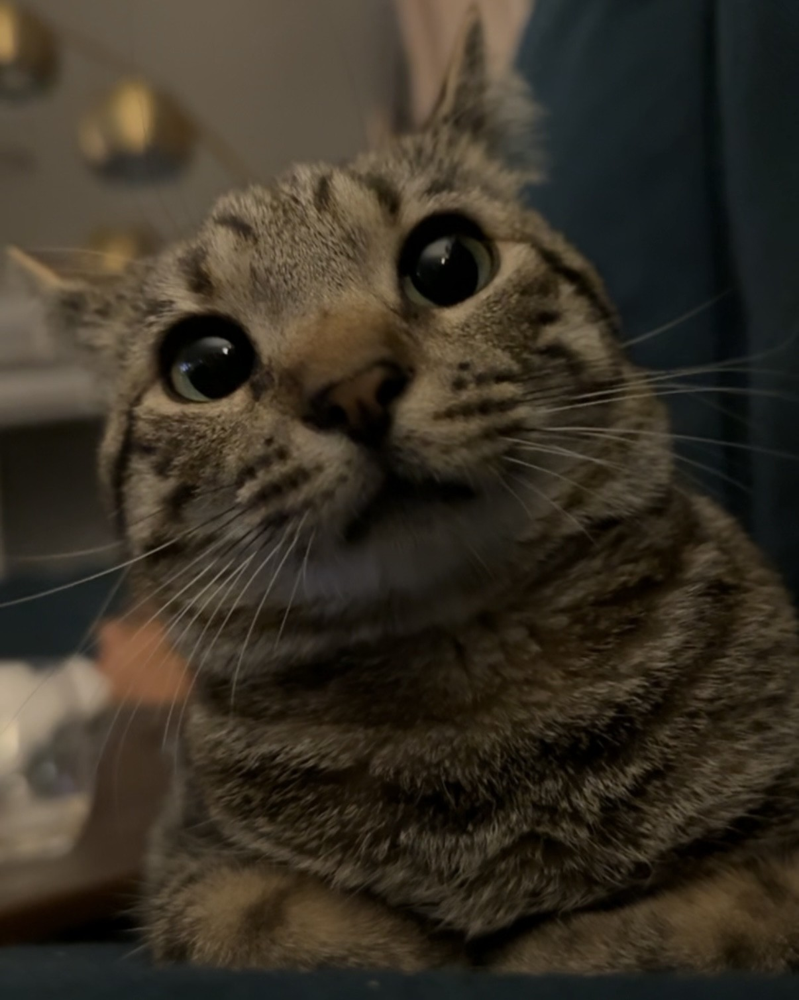

Domenica Elgart - WPI Frontiers (Pre-College Program)
About Me (Domenica)
Hello! Here is a little bit about me and what I'm up to!
I am currently a rising high school senior from Long Island, New York, and I am attending WPI for the Frontiers Program. Back at home in my spare time, I enjoy playing the bass, going to concerts, and skateboarding. I have played in a few bands in the past and am currently in search of a new band! (looking for a guitarist and drummer!) I go to any and all kinds of concerts, and have a bunch lined up for this fall, like The Hellp, Frost Children, Inhaler, and more. I love to travel and see new places as often as possible. When I get back from the Frontiers program, I am going to Italy for the first time! My favorite music genres include metal (progressive, death, thrash, etc.), rock, and pop-punk. In my past bands, we played deathcore or death metal. In the new band that I am forming myself, I am looking to do some Paramore covers to start out. I hope to major in electrical or mechanical engineering when I go to college, and after college I would like to start my own guitar manufacturing business and maybe even become a touring musician if my musical career takes off. I really like WPI, and hope to attend here for college once I graduate high school.
Also, here is a picture of my cat, her name is Rizzo and she's 1 year old :3
